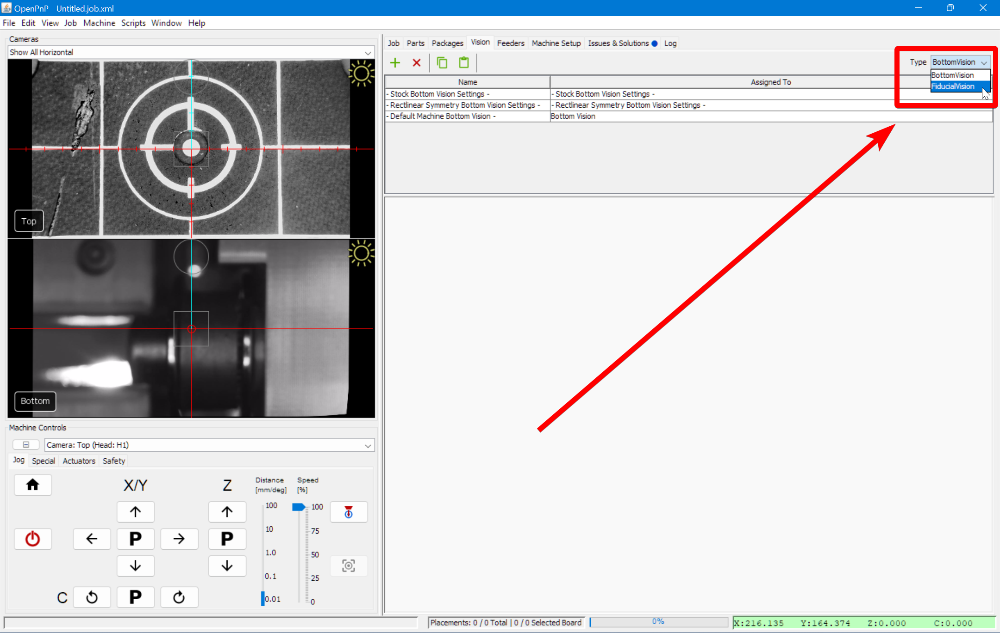
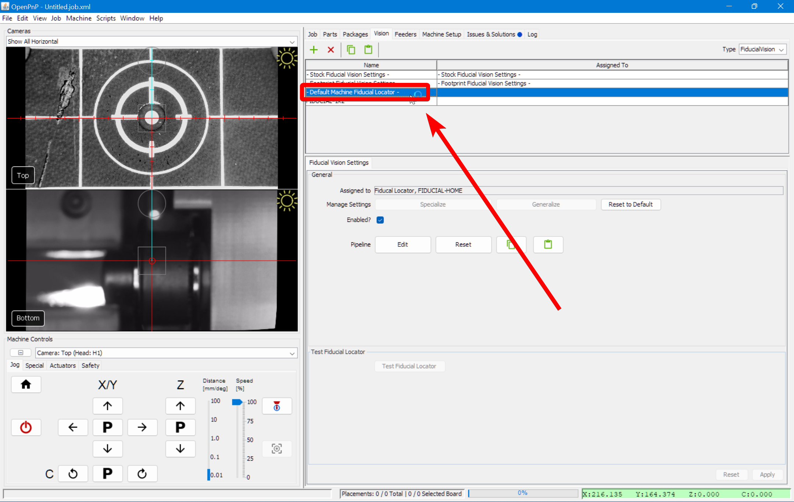
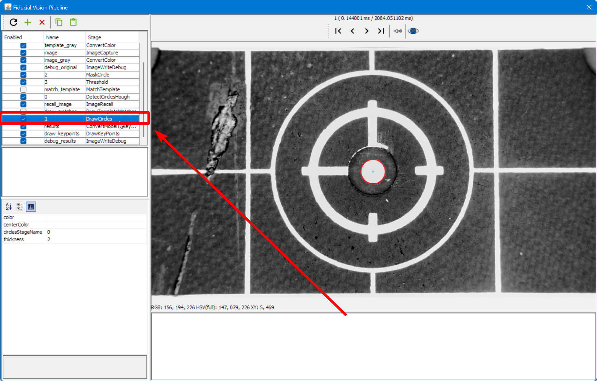
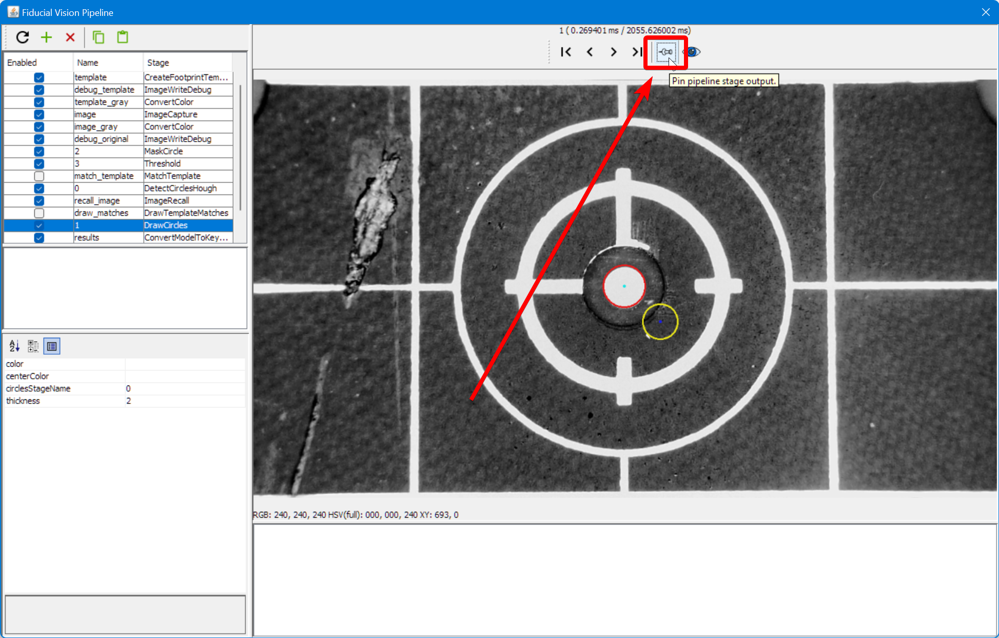
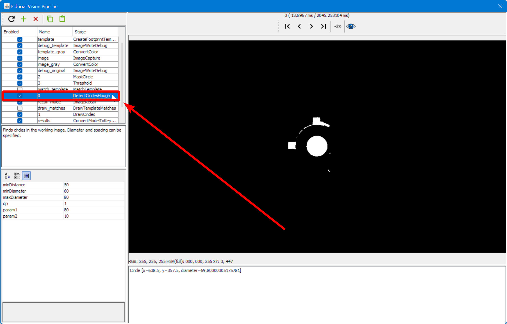
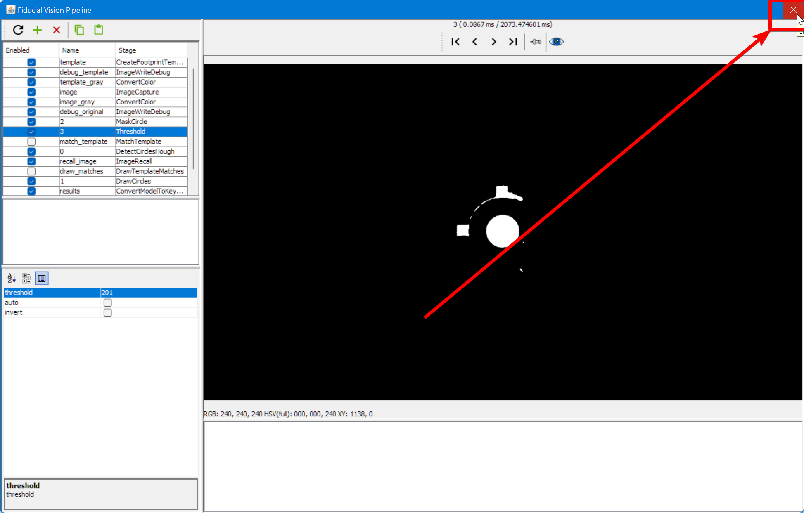
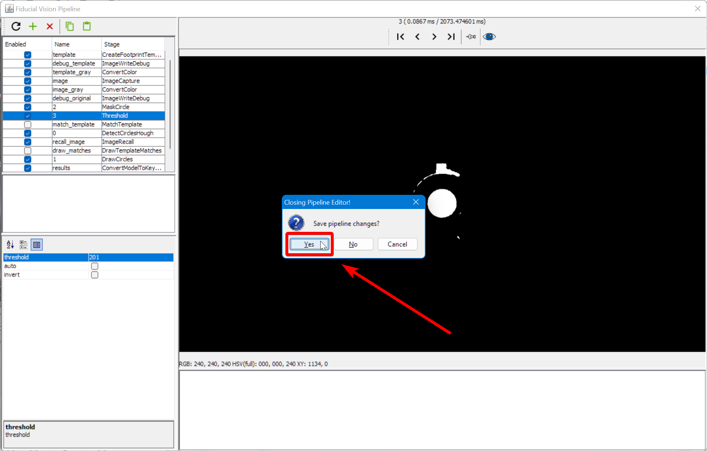

Vision Pipeline Adjustment
Computer vision is one of the most important and complicated elements of a pick and place machine, and the LumenPnP is no different. Vision is used in four main places:
- Finding your homing fiducial
- Finding the fiducial marks on your PCBs
- Finding the tips of your nozzles, and
- Confirming and orienting the parts the machine has picked up.
We've included good settings in the default machine configuration to get you started, but you will likely need to tune the settings for your exact needs depending on the ambient light in your room, the settings you used when configuring your cameras, and the kinds of components you're placing. This page is to get you set up to place components for your FTP, and learn the basics of how adjusting computer vision works. For more information, we highly recommend reading the OpenPnP documentation.
Intro to Vision Tuning
Computer Vision Basics
Computer vision used in OpenPnP takes photos from your top or bottom camera and passes them through a "Pipeline" of stages to identify what is in the image. Stages fall into a few categories:
- Manipulating the photo to make it easier for the computer to identify parts of the photo. For example:
Threshold. - Identifying certain elements of the photo. For example:
DetectCirclesHough. - Showing you more information on the screen so that you can build, debug, and tweak the pipeline. For example:
DrawCircles.
Because each of these kinds of stages live together in the pipeline, it can be a little confusing trying to decode how each stage works and what they're for.
Each stage of the pipeline has "parameters" that control its function. For example, the ImageWriteDebug step will ask you for parts of a file name to use when saving a debug image. Another more typical example is the Threshold stage, which will use a threshold parameter to pick which parts of your image will become white, and which will become black.
When editing your vision pipeline, you should be able to start with simply tuning the parameters for the stages in the default pipeline. As you get more experienced, and if you're setting up more complicated placement jobs, you may need to add more stages to the pipeline to fine tune it for your needs.
Pipeline Organization
As of the 2022-08-01_18-07-09.2a36a8d update, OpenPnP added the "Vision" tab in the Machine Configuration section, which lets you create more specific pipelines for unique scenarios. Now you can define multiple specific pipelines to handle identification of different PCB components differently if you're not able to build a single pipeline to accommodate them all. This adds more functionality, but can be confusing when getting started. In general we recommend having four main pipelines to get started (when doing the FTP and beyond):
- Finding your homing fiducial (Top Camera)
- Finding the fiducial marks on your PCBs (Top Camera)
- Finding the tips of your nozzles (Bottom Camera)
- Confirming and orienting the parts the machine has picked up. (Bottom Camera)
Number 4 above is the one that you might expand when you move on to placing more complicated components. Note also that this "Vision" tab is brand new in OpenPnP, and so guidance here is subject to change as the new feature gets refined in future OpenPnP releases.
Pipeline Editing View
The pipeline editing view has several sections and features you should know about to make your tuning go more smoothly.
- The list of stages. Click on a stage to show it's results in the main view, and show its parameters in the stage settings.
- The main view. This shows the result of the currently selected stage unless a particular stage is pinned (see #5).
- Stage output. This shows error messages if there's a problem with your stage or pipeline.
- Stage settings. This lets you change the settings for the selected stage.
- Pin Image. This lets you keep the results of the currently selected stage on on main view, even if you select another stage. Use this to pin a debugging stage so that you can quickly see the results of changes to a stage you're editing.
Top Camera Vision Pipeline
Homing Fiducials
If you find that the machine is having a hard time finding the homing fiducial, you might need to edit the Vision Pipeline. The iterative strategy here is:
- Open the Pipeline.
- Check the current output and identify the problem that is causing homing to fail.
- Adjust the stage settings to change the pipeline output.
- Review the new pipeline output.
- Return to step 2 as necessary.
Open the Pipeline
-
Click on the
Machine Setuptab in the top right pane.
-
Click on the "Expand" checkbox if necessary.

-
Click on
Heads > ReferenceHead H1.
-
Click on the "Position Camera over location" icon button show below. This will move the top camera to where your datum board is mounted.

-
Confirm that your top camera is positioned exactly over the homing fiducial.

-
Adjust the exposure of your camera image as mentioned in the Homing Fiducial Section.
-
Go to the
Visiontab.
-
Select on
FiducialVisionfrom the type dropdown.  -
Select
- Default Machine Fiducial Locator -from the pipeline list.  -
Click on Pipeline
Edit.
Check the debug results
-
Click on the
DrawCirclesstage.  -
The main view will show a circle if OpenPnP was able to identify what it thinks is the homing fiducial.
- If there are more than one circle, then we need to more clearly distinguish the real homing fiducial.
- If there is one circle, but it is not correctly drawn around the homing fiducial, then we need to more clearly distinguish the homing fiducial.
- If there are no circles, we need to loosen the filtering to make the real homing fiducial easier to identify.
- If the image looks like the good one above, your pipeline is properly tuned. If you've still been getting failures when homing, you may need to slightly loosen the filtering.
Adjust Pipeline
-
Click on the
Thresholdstage
-
Raise or lower the
thresholdparameter as necessary until the image is precise.- If the image is too black, raise the
thresholdsetting. - If the image is too bright, lower the
thresholdsetting.
- If the image is too black, raise the
-
Click on the
DrawCirclesstage and check if the fiducial has been correctly identified. -
If not, pin the view of the
DrawCirclesstage.  -
Click on the
DetectCirclesHoughstage.  -
Raise or lower the
param2parameter as necessary until the correct number of circles are identified.- If there are no circles, lower the
param2setting. - If there are too many circles, raise the
param2setting.
- If there are no circles, lower the
Review Pipeline Output
-
When the fiducial is correctly identified, close the pipeline editor. 
-
When prompted, save the edits you've made. 
-
Try homing the machine to see if it can identify the homing fiducial.

PCB Fiducials
-
Go to the
Visiontab. -
Select on
FiducialVisionfrom the type dropdown. -
Select
FIDUCIAL-1X2from the pipeline list. -
Click on Pipeline
Edit. -
Continue with the same procedure as the Homing fiducial section above.